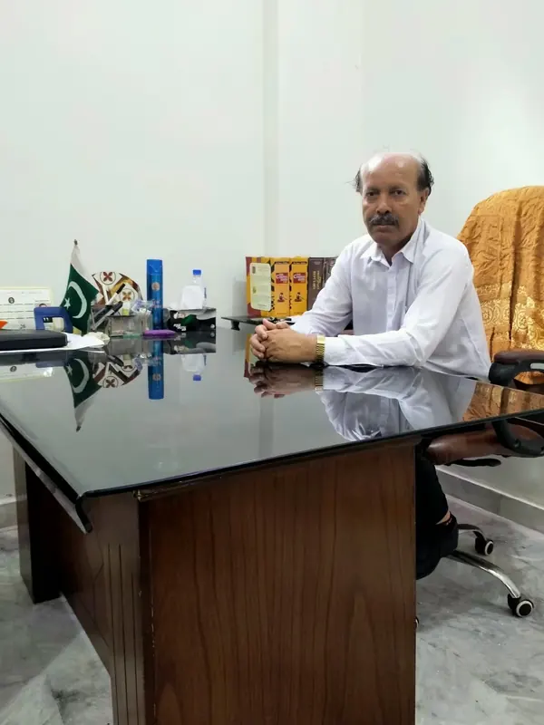
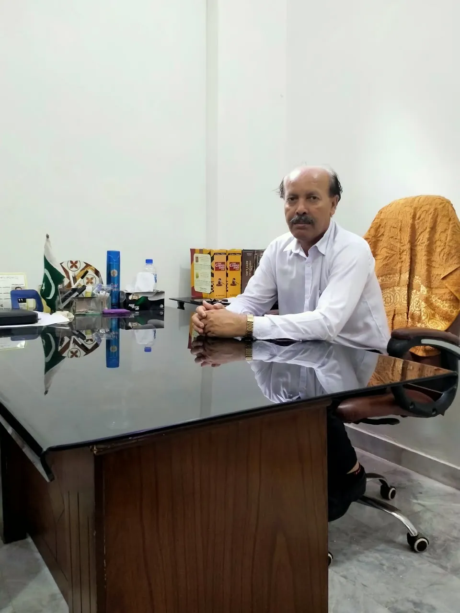
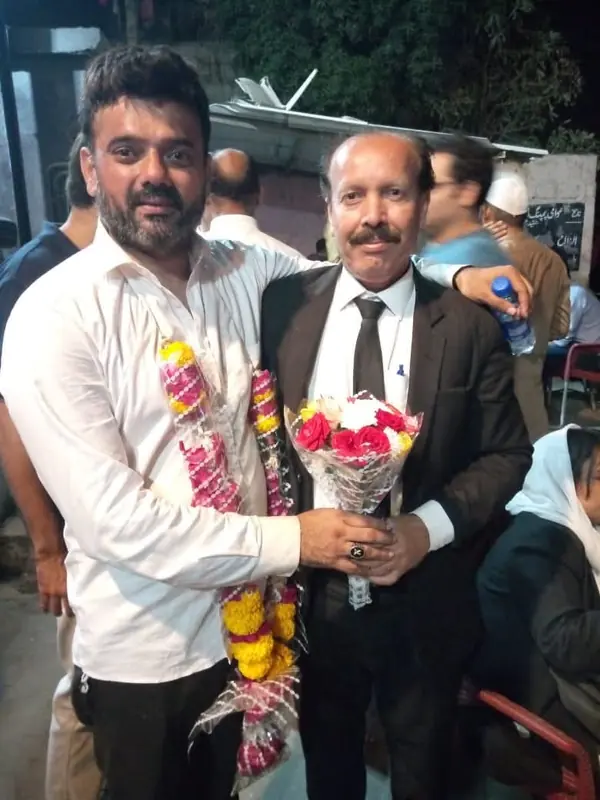
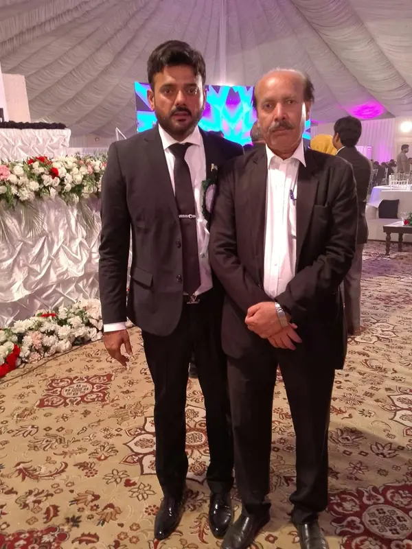

01 / CIVIL
Civil disputes
Representation and advice in civil disputes, including recovery claims, agreements and injunction-related matters.
Scope and representation are agreed after an initial review.

TAJ ALI ADVOCATEADVOCATE HIGH COURT · KARACHITwenty years in legal practice.
Thoughtful advice. Committed representation.
Your matter, given the attention it deserves.
In legal practice
Cases undertaken
Pending matters

MEET TAJ ALI
Taj Ali Advocate is an Advocate High Court in Karachi, practising through Shaikh Law Firm.
With 20 years of practical experience and more than 1,000 cases undertaken, his work spans civil, criminal, family, rent and a broad range of other legal matters.
From understanding the facts to preparing the next step, the focus is on a direct conversation, careful preparation and representation suited to the needs of your matter.
Explore the areas of practice.
Select the help you are looking for.
Representation and advice in civil disputes, including recovery claims, agreements and injunction-related matters.
Scope and representation are agreed after an initial review.
Legal matters before the High Court of Sindh and city courts, with assistance for matters across Pakistan.
Ask about your jurisdictionHigh Court practice · Karachi
Civil, criminal, family and rent matters
Discuss the location and requirements of your case
Know what to expect
before you begin.
Explain your matter and mention any hearing date or deadline.
Discuss relevant documents, the proposed scope and consultation fees.
Proceed with the work once the terms of representation are agreed.

01 / PHOTO ALBUM · 7 PHOTOGRAPHSPEOPLE & MOMENTS
Amir Nawaz Warich
A collection of moments to remember.

02 / PHOTO ALBUM · 12 PHOTOGRAPHSOCCASIONS & CONNECTIONS
A collection of shared occasions
Conversations, gatherings and memories captured along the way.
Scroll to explore · Select a photograph to view in full
Reach Taj Ali directly, or send a short enquiry.
Chamber visits by appointment.
KEEP IN TOUCH
Save the Shaikh Law Firm visiting card for your next appointment.
Download visiting cardFor website enquiries
tajaliadvocate@gmail.com
BEFORE YOUR CONSULTATION
Bring relevant notices, agreements, court papers and a brief timeline of events. Mention any upcoming hearing or deadline when arranging the consultation.
Fees depend on the work involved. Discuss the consultation fee and scope of representation before proceeding.
No. Representation begins after the matter has been reviewed and an engagement agreed. No specific outcome is guaranteed.